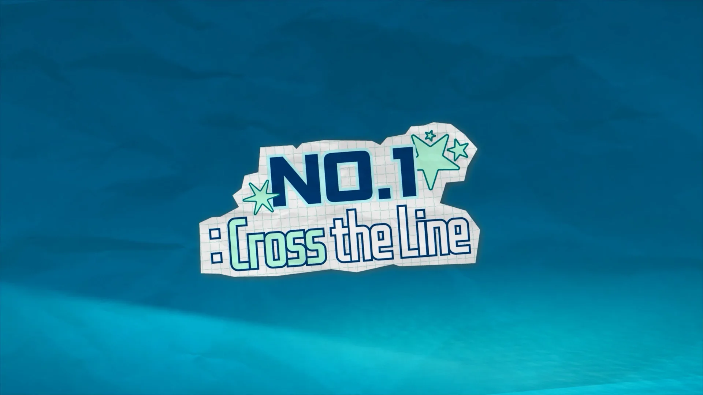

CJ Milano Winter
Olympics Campaign
Building a Campaign
Through Content
밀라노 동계올림픽을 배경으로 진행된
CJ 유튜브 캠페인의 영상 콘텐츠 촬영과 편집을 담당했습니다.
출연자의 스토리와 브랜드 메시지를 자연스럽게 연결하고,
자막과 모션 그래픽을 활용해 콘텐츠의 몰입감을 높이고
완성도 높은 시청 경험을 구축했습니다.PL2 produced video content for
CJ’s YouTube campaign during
the Milano Cortina 2026 Winter Olympics.
We handled filming, editing, subtitles,
and motion graphics across multiple formats,
from long-form videos to Shorts.
Each video wove personal stories into
CJ’s campaign message.
One Campaign, Multiple Stories
밀라노 동계올림픽을 배경으로 진행된 CJ 유튜브 캠페인을
다양한 콘텐츠 형식으로 전개했습니다. 롱폼 콘텐츠부터 숏츠까지,
촬영과 편집, 자막 작업을 통해
일관된 브랜드 경험을 구축했습니다.Blending interviews and on-location footage
with dynamic editing and motion graphics,
we kept a cohesive look and feel across every video in the campaign.
Dream:
Walk the Line
Two Different Dreams
- 민선X엔하이픈 성훈Dream: Walk the Line
Two Different Dreams
- Minseon × ENHYPEN Sunghoon
서로 다른 분야에서 각자의 길을 걸어온 두 인물의 이야기를 중심으로,
인터뷰와 현장의 분위기를 자연스럽게 연결했습니다.
편집과 자막 모션을 통해 대화의 흐름과 감정을 효과적으로 전달했습니다.Through interviews and documentary-style footage,
we told the stories of two people chasing very different goals, with subtitles and motion graphics guiding
the narrative.
Cross the Line
엔하이픈 성훈 in MilanoCross the Line
ENHYPEN Sunghoon in Milano
밀라노를 배경으로 성훈의 여정을 기록한 콘텐츠입니다.
도시의 분위기와 브랜드 경험을 자연스럽게 담아내고,
촬영과 편집, 자막 작업을 통해 현장감 있는 시청 경험을 완성했습니다.We followed Sunghoon through Milan, capturing
the city’s atmosphere,
his day-to-day moments,
and key scenes from the campaign.